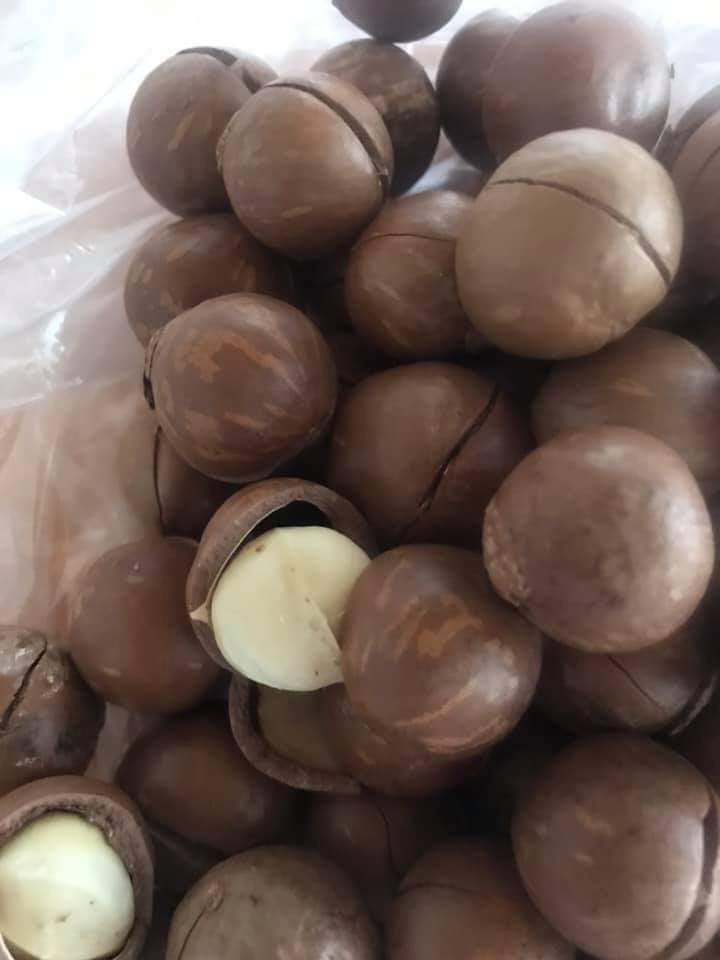
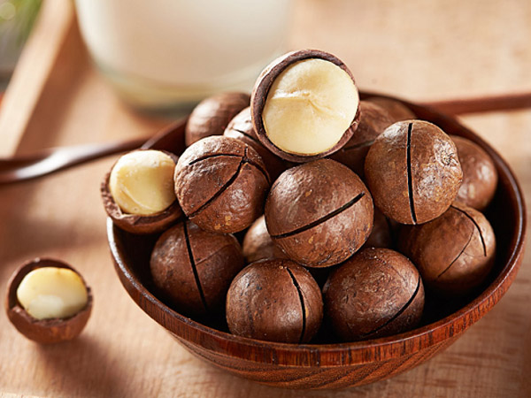

Hạt macca là gì?
Hạt macca (phiên âm sang tiếng Việt là Mắc ca) là hạt của cây Macadamia – Một loại thực vật thân gỗ thuộc họ Proteaceae, có nguồn gốc từ nước Úc.
Cụ thể
Hạt Mắc ca là một loại hạt có vỏ màu nâu cứng bao bên ngoài, sau khi tách phần vỏ này sẽ xuất hiện nhân hạt có kích cỡ khoảng 3cm, ăn vị ngọt bùi, màu trắng sữa và dường như không có mùi.
Vì hàm lượng dinh dưỡng cao song điều kiện nuôi trồng và thu hoạch tương đối phức tạp, nên giá thành của hạt macca khá chênh so với thu nhập chung của người Việt.
Giá trị dinh dưỡng hạt macca
Khi hiểu khái niệm hạt macca là gì, bạn sẽ nắm được cơ bản lý do vì sao thực phẩm này được ưa chuộng và nằm trong danh sách những loại hạt khuyên dùng.
Dù vậy, để có góc nhìn toàn diện và sâu sắc hơn về giá trị sử dụng hạt macca.
Giá trị dinh dưỡng trong 100g mắc ca
Có thể thấy loại hạt này chứa gần như đầy đủ các nhóm chất cần thiết có lợi cho sức khỏe. Bao gồm:
- Chất đạm: 8g Protein.
- Bột đường: 14g Cacbohydrat, 9g Chất xơ, 4.6g Đường thực phẩm.
- Chất béo: 12g Chất béo bão hoà, 1.5g Chất béo không bão hòa đa, 59g Axit béo không bão hòa đơn, 76g Lipid.
- Vitamin và khoáng chất: Vitamin (0.3mg Vitamin B6, 1.2mg Vitamin C) và các khoáng chất thành tố khác (368mg Kali, 130mg Magie, 85mg Canxi, 5mg Natri, 3.7mg Sắt).
Ngoài các dưỡng chất quan trọng trên, macca còn cung cấp dồi dào năng lượng (718 kcal Calo/ 100g hạt), lại không chứa Cholesterol gây hại, nên có thể xuất hiện hợp lý trong chế độ dinh dưỡng của người ăn kiêng hoặc người đang phòng ngừa, điều trị một số bệnh.
Nếu bạn muốn tham khảo chi tiết hơn về giá trị dinh dưỡng của hạt macca và những chất dinh dưỡng đó có tác dụng gì đối với sức khỏe có thể tham khảo tại đây.
Phân loại
Có nhiều cách phân loại hạt macca, nhưng phổ biến nhất là phân loại theo nguồn gốc xuất xứ và phân loại theo hình thức sản phẩm.
Ngoài ra, bạn cũng có thể chia mắc ca theo thương hiệu, kích cỡ và giá tiền.
Hiện trên thị trường đang tồn tại 2 loại macca chính:
- Hạt mắc ca tách vỏ: Còn gọi là nhân hạt mắc ca, tức là người mua có thể sử dụng luôn mà không cần phải mất thêm thời gian tách vỏ. Giá bán nhân macca do đó cũng cao hơn, dao động trên dưới 1 triệu đồng/ 1 kg.
- Hạt macca nứt vỏ: Có 2 loại nứt tự nhiên do quá trình sấy khô và nứt nhân tạo. Loại này bắt buộc bạn phải tốn thêm thao tác tách vỏ để lấy phần nhân bên trong, nên giá chỉ bằng 1/2, thậm chí 1/3 giá nhân hạt.
Dĩ nhiên, mỗi loại sẽ có những ưu và nhược điểm riêng.
Chẳng hạn hạt macca tách vỏ dễ bị hôi dầu hơn, hàm lượng dinh dưỡng cũng mất đi ít nhiều song lại dễ ăn.
Tuy nhiên hạt nứt vỏ thì ngược lại, tuy có thể giữ tối đa dưỡng chất nhưng lại khó sử dụng.
Công dụng
Công dụng của hạt mắc ca đối với sức khỏe rất tích cực, đặc biệt khi sử dụng cho trẻ em và bà bầu, hoặc những người mắc bệnh mãn tính như tiểu đường, tim mạch…
Vì chứa nhiều dưỡng chất thiết yếu và hương vị thơm ngon, hạt macca được sử dụng phổ biến cho mục đích thực phẩm (90%), bao gồm ăn sống và là nguyên liệu chế biến các loại bánh kẹo lành mạnh.
Nhiều người đặt ra câu hỏi ăn hạt macca có béo không ? Họ lo sợ ăn hạt macca sẽ gây tăng cân.
Nhưng ngược lại hạt macca không những ăn không béo mà lại rất tốt chó sức khỏe.
Vậy macca công dụng chi tiết ra sao? Sau đây là một số tác dụng phổ biến nhất:
- Mắc ca dồi dào axit palmitoleic, có tác dụng đốt cháy chất béo. Vì vậy, hạt macca hỗ trợ giảm cân, kiểm soát trọng lượng hiệu quả.
- Chứa nhiều nguyên tố khoáng chất và các chất chống oxy hóa cần thiết, giúp cải thiện trí nhớ, tăng cường hoạt động thần kinh, đồng thời dưỡng da sáng đẹp.
- Cung cấp các chất béo tốt có tác dụng làm giảm cholesterol xấu, góp phần duy trì hệ tim mạch ổn định; ngăn hình thành các cục máu đông, từ đó giảm nguy cơ tắc nghẽn xơ vữa động mạch.
- Tăng cường chức năng tiêu hóa nhờ cung cấp lượng lớn chất xơ thực phẩm. Người ăn hạt macca vì thế thường ít gặp các vấn đề về tiêu hóa, đặc biệt là táo bón.
- Hạt mắc ca chứa hàm lượng phốt pho cao, là chất quan trọng trong quá trình khoáng hóa của răng, xương, trao đổi chất. Cùng với Omega 3, macca nhanh chóng trở thành hạt dinh dưỡng siêu lý tưởng trong việc giảm thiểu các vấn đề xương khớp…